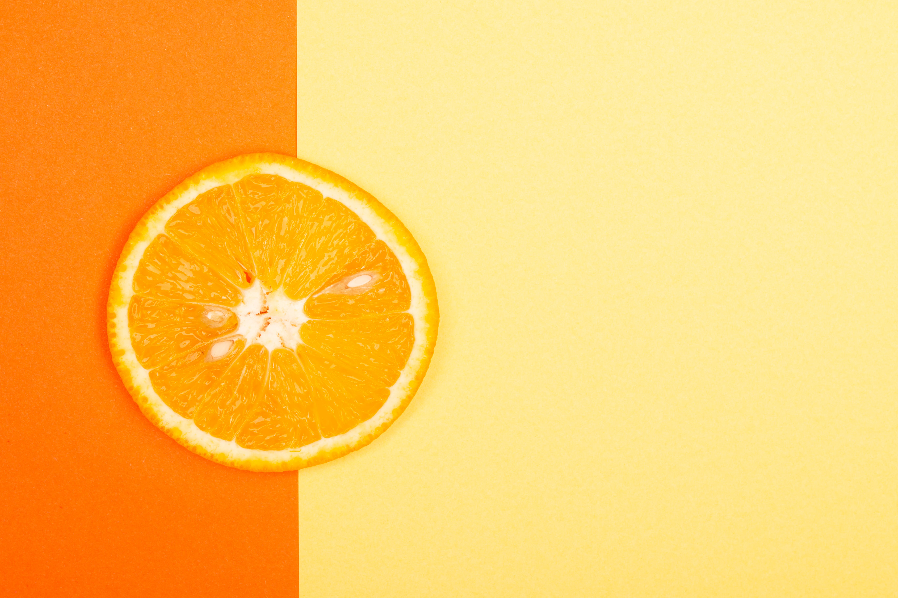

FooD_BloggeR.💁
~ Designed By The Recepie Developer.......🍽😋

About Us
Recepies
My Top Recepies Are:
🍗 Chicken Biryani
☕Coffee_Cremer
🍹Orange Marmalade
🥗Matar Butter Paneer
🍰Red Velvet Cheese Cake
◆Let Food Be The Form Of Love 🤝🍫💙